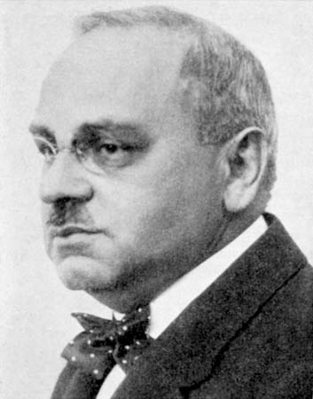

返回主页
Alfred Adler（与弗洛伊德并肩的心理学大师）

Alfred Adler：Founder of the school of Individual Psychology（个体心理学派创始人）
Alfred Adler 是与 Sigmund Freud 并肩的心理学大师），是用心理分析方法研究家庭与儿童教育问题的创始人。Alfred Adler 被认为是西方教育心理学的主要领导人物之一。
“正面管教（Positive Discipline）”体系三十年前源于美国，以奥地利心理学家Alfred Adler和Rudolf Dreikurs的“个体心理学”理论为基础，由Jane Nelsen、Lynn Lott等教育专家组成的团队完善，发展为一个涵盖沟通和相互尊重的，体验式的家长教育课程、“正面管教”已成为美国主流家长教育体系之一。
正面管教（Positive Discipline）：快乐PD妈家长课堂
Vivian：美国PDA正面管教协会注册认证家长讲师
Certified Positive Discipline Parent Educator （CPDPE）
“快乐PD妈家长课堂”联系方式
“快乐PD妈家长课堂”微信公众号：快乐PD妈
“快乐PD妈家长课堂”微信服务号：PD2014Vivian
需要正面管教（Positive Discipline）专业教练，请加 微信公众号：快乐PD妈（二维码）
Alfred W. Adler (1870 �C1937) was an Austrian medical doctor, psychotherapist, and founder of the school of individual psychology. His emphasis on the importance of feelings of inferiority―the inferiority complex―is recognized as isolating an element which plays a key role in personality development. Alfred Adler considered human beings as an individual whole, therefore he called his psychology "Individual Psychology" (Orgler 1976).
Adler was the first to emphasize the importance of the social element in the re-adjustment process of the individual and who carried psychiatry into the community.
阿尔弗雷德・阿德勒（Alfred Adler ，1870年-1937年），奥地利精神病学家。个体心理学的创始人，人本主义心理学先驱，现代自我心理学之父。弗洛伊德的学生之一，但也是精神分析学派内部第一个反对弗洛伊德的心理学体系的心理学家。
阿德勒有《神经病的形成》、《自卑感》等著作，他将精神分析由生物学定向的本我转向社会文化定向的自我心理学，对后来西方心理学的发展具有重要意义。
1895年阿德勒获得维也纳大学医学院博士学位，当眼科与内科医生。
1899年阿德勒遇见精神病理学权威弗洛伊德（Sigmund Freud，1856―1939年），并跟随弗洛伊德学习。
1902 年他参加弗洛伊德周三讨论会，是当时精神分析学派的核心成员之一。
1908年在奥地利的萨尔茨堡召开的第一次国际心理分析会议期间，阿德勒发表了关于“好斗的冲动”的报告。
1910 年任维也纳精神分析学会主席。
1911 年因突出强调社会因素的作用，公开反对弗洛伊德的泛性论而两人关系破裂，阿德勒创立个体心理学（individual psychology），另建自由精神分析研究会。
1912 年改称个体心理学会，成为一个颇有影响的学派。
1914 年他创办《国际个体心理学杂志》。
1895 年，阿德勒进入维也纳大学取得医学博士学位，初为一眼科医师，他特别注意身体器官的自卑，认为它是驱使个人采取行动的真正动力。后转向精神病学，曾追随弗洛伊德探讨神经症问题。
1920 年后任教于维也纳教育学院，并在学校系统中组织儿童指导临床活动，成立儿童指导中心。
1922 年至 1930 年期间，他主持召开了五次国际个体心理学会议。
1926 年任美国哥伦比亚大学的客座教授。
1932 年他到长岛医学院任美国医学心理学的第一个讲座。
1934 年定居纽约。
被称为阿德勒门徒( Protégé)的Rudolf Dreikurs在芝加哥（Chicago）成立阿德勒研习会。
正面管教（Positive Discipline）：快乐PD妈家长课堂
快乐PD妈微信公众号：快乐PD妈（二维码）
Rudolf Dreikurs
鲁道夫・德雷克斯 Rudolf Dreikurs （1897－1972），美国儿童心理学家、精神病医生和教育家。Dreikurs出生于奥地利维也纳，逝于美国芝加哥。 1918 年开始其医学研究生涯。Dreikurs结识了阿德勒，那时阿德勒已经是一位声誉显赫的精神病学家了，他对德雷克斯产生了极大的影响。1923 年获得维也纳大学医学博士学位后，德雷克斯与阿德勒密切合作研究家庭与儿童咨询，直到阿德勒离开奥地利。
Rudolf Dreikurs (1897, Vienna �C 1972, Chicago) was an American psychiatrist and educator who developed psychologist Alfred Adler's system of individual psychology into a pragmatic method for understanding the purposes of reprehensible behaviour in children and for stimulating cooperative behaviour without punishment or reward.
He suggested that human misbehavior is the result of feeling a lack of belonging to one's social group. When this happens the child acts from one of four "mistaken goals": undue attention, power, revenge or avoidance (inadequacy). His overall goal was that students would learn to cooperate reasonably without being penalized or rewarded because they would feel that they are valuable contributors to the classroom.
In 1952, Dreikurs organized a group of followers of Adlerian Psychology to found the North American Society of Adlerian Psychology.
私立中学的课程
古之学者为己，今之学者为人。我们用心做，您来细细品。您也可以 先下载一个应用程序（App），有空再慢慢看。
version:1.0; jobnet@188.com © retter2012.com